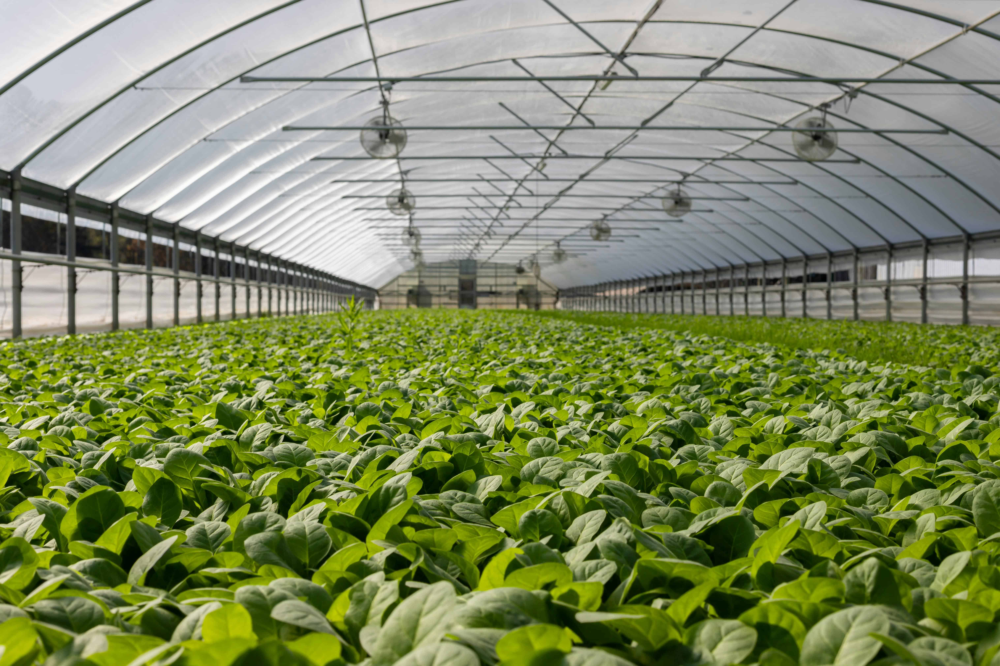

Overview
This project focuses on promoting sustainable agriculture practices to enhance food security, improve environmental stewardship, and support rural development.
Objectives
- Develop and promote climate-resilient agricultural practices.
- Improve soil health and fertility.
- Enhance biodiversity and ecosystem services.
Outcomes
The project aims to increase crop yields, improve water management, and reduce environmental degradation, ultimately contributing to food security and sustainable development.
